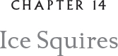

When our intensive training period began, our first class was scheduled before tweener. They thought that cadets learn better when hungry. The classes were larger than the beginner courses, with more owls than before. Some we had not yet met, as they had been brought in from a sub-camp on a small island off Dark Fowl where they had completed their preliminary training week. I was ordered to report to the Ice Squires, commanded by a pompous old Short-eared Owl, Captain Ludvigsen Asio Flammeus. Just to give you the flavor of the old hoot, here is how he introduced himself:
“I am Captain Ludvigsen Asio Flammeus the Fifth. My father, my grandfather, great-grandfather, and great-great-grandfather all served at this Academy after distinguished careers in the Ice Squires unit, one of the oldest units in the Kielian League. As you may know, the Ice Squires fight with both hot and cold weapons. Although, not fire claws, of course. It might also interest you to know that my family’s name, Ludvigsen, is taken from an Other,16 a certain Erich Ludvigsen Pontoppidan, who first identified our species.17 It is a name I carry with deep pride.”
“Weird,” whispered a Whiskered Screech who perched beside me on the rocks where we had assembled.
I also wondered why someone would be proud to be named after an Other and began to say, “My sentiments ex —” but the words caught in my throat as I turned to her. She was the loveliest Whiskered Screech I had ever seen.
“Did you have something to say, Cadet Lyze Megascops?” the captain asked. And this, unfortunately, is where my history caught up with me.
“Nothing, sir,” I replied crisply, and gave the required salute.
“Tell me, were you as vociferous in the attack on Stormfast, where you supposedly distinguished yourself?”
“No, sir, it was very hard to breathe for all the smoke.”
“Well, why don’t you inhale all your hot air now and cease speaking!” he barked.
“Sir!” It was the lovely Screech next to me. She had raised her starboard talon.
“Yes, Cadet Lillium Megascops? You have something to say?”
“Indeed, sir. It was I who initiated the conversation with Cadet Lyze Megascops.”
“So you want to take the blame, I assume?”
“Yes, sir,” she answered. The captain folded his wings behind his back and strutted over to us.
“Well then, Miss Cadet!” he huffed. He was about to continue, but Lillium broke in.
“Miss Cadet Lillium Megascops, sir?”
“Do you have a hearing problem?”
“No, sir. It’s — it’s —” she began to stammer. “It’s just that I have never heard a female cadet referred to as ‘Miss.’”
“And you take issue with that?”
“Well, sir …” She was silent for several seconds, and I thought she was going to wilf. But quite the reverse, she seemed to increase in size. “Yes! Yes, I do take issue. We are all serving here together, and there is no need to call attention to our gender.”
You could have heard a feather drop. Not just any feather but the finest fringe feather, a plummel. Great Glaux, I thought. I had never encountered anyone like this Lillium.
“I suggest, Miss Cadet, that along with your friend here, you inhale some of your hot air as well and shut up!” The captain turned on his talons and stormed away.
She flipped her head around toward me, winked, and whispered, “I’d say we’re off to a good start, Cadet Lyze Megascops!”
Oh, great Glaux, my gizzard went into a flutter. She wasn’t frightened of the old hoot at all. Despite this rather rocky beginning, the practice went rather well, even though I could hardly concentrate due to my giddy condition over Lillium. We practiced with a variety of weapons, both of ice and metal. We learned the proper way to grip an ice weapon with our battle claws, both on and off. Luckily for us, the two lieutenants, both Short-eared Owls, did most of the real instruction and they were quite nice.
“Don’t let the captain get you down,” said Lieutenant Artemis Asio Flammeus. “He bellows about quite a bit with the new cadets. He doesn’t mean much by it.” I did not want to admit it but it didn’t get me down one single bit. If it hadn’t been for the captain, I might never had had my encounter with Lillium.
In this first training session, our instructor set up several targets with the peculiar double crescent insignia, just like the ones we had seen emblazoned on the owls’ faces who had attacked us at the Ice Dagger and on Stormfast, the night my sister died. There were perhaps twenty targets altogether, but only one had crossed crescents, which we were told were the badge of Bylyric, the Orphan Maker himself. After exposure on the training field, it would not take long for this so-called “symbol of sacred force” to lose its mystique entirely and become about as sacred as a wet pellet.
Both Lillium and I did well in the training session, which seemed to aggravate the captain. Every time Lieutenant Artemis would praise us or Lieutenant Ganymede Asio Flammeus said how well we had executed a maneuver, the captain felt compelled to find a slight flaw in our performance. “Let’s not get too fanciful, Cadet Lillium Megascops.” Or “Cadet Lyze Megascops, you have an odd twist on the downstroke when you wield that blade. Is that a peculiarity you picked up in the skirmish on Stormfast? Or are you just trying to be creative?” He said the word “creative” as if it were something profoundly shameful.
“No, sir,” I would mutter.

For our next training session, unfortunately, Lillium was put in another group. This session focused on flight formation, or FF. FF was perhaps the most challenging exercise new cadets encountered. We were all used to flying and dealing with a variety of weather conditions, but we were not used to flying in formation. It was a new discipline, used in warfare for purposes of mutual defense and the concentration of strike power. I had heard my parents talk about it, and I knew their positions in a number of different formations. But no one ever called the formations out loud. All commands were expressed nonverbally through wing signals so the flying units could operate in total silence. Therefore, our first lesson was to learn what we called the WWS, the wing waggle signals, for a variety of maneuvers. There were perhaps two dozen or more aerobatic maneuvers that had to be mastered for flying in formation and so there was a lot of code to learn.
We began with the signals for the five basic formations — the retract and roll, the vertical break, the crossover break, the flat pass, and the tail slide. It was after midnight before they actually let us take flight and practice giving the signals and performing the first couple of maneuvers.
“Oh, sorry, old fellow!” said a Great Horned Owl, Cadet Skellig Bubo, as he bumped into me. “I’m about as graceful as a puffin with its wings gone cattywampus!” I had to laugh. Cadet Skellig came from a somewhat aristocratic family that lived in a firthkin far up in the Firth of Fangs.18 Skellig spoke very properly with the cultivated accent of the owls from that firthkin, but he was not at all stuffy or grand or self-important like Captain Ludvigsen Asio Flammeus. He had a terrific sense of humor. Indeed, he was the one who came up with the nickname for the captain — Lud-Dud, which, at the time, we all thought was hysterically funny. We did not have the most sophisticated senses of humor.
Cadet Skellig seemed somewhat older than his years and was rather small. His flight skills were not promising, but he did try hard. Blix and Loki had told me that cadets from his firthkin were usually admitted to the Academy because of their distinguished ancestry. What he lacked in skills, he more than made up for with his sense of humor and good spirits. Everyone liked Cadet Skellig Bubo. He was elected as our barracks sergeant, which meant that he had to make sure we kept our personal hollows neat — there were no nest-maid snakes in the barracks. He even helped us clean if our hollows got messy. After twixt time, no one was supposed to leave the barracks but he never reported the many who snuck out to visit the grog trees. I did myself a few times. I didn’t drink the highly potent bingle juice, but it was fascinating to listen to the soldiers back from the front with their combat tales. The grog tree offered an education apart from our formal training that was very valuable.
While we were doing our drills for formation flights over the training field, I caught sight of Blix and a dozen or so Northern Saw-whets, Pygmies, and Elf Owls practicing with ice splinters. Our flight formation instructor pointed them out.
“A Frost Beak unit in training below us,” he announced. Targets had been set up on the ground, and the small owls were zooming in with their launch sticks loaded with the ice splinters. Few of them were hitting their marks. “It takes a great deal of practice,” our instructor, a Brown Fish Owl named Colonel Solsten Ketupa Zeylonensis, explained as we made a flat pass over the field. “The launching stick is difficult to manipulate and requires a great deal of practice. You need to find the proper grip and there’s a rhythm to it.”
“May I ask a question, Colonel, sir?”
“Certainly, Cadet Lyze.”
“How many ice splinters does a launcher hold?”
“Good question. Just two. Then it’s back to the field quartermaster. Orf is working on a launcher with a larger capacity, but of course that has to be balanced out against the very slight weight of the small owls best suited to these weapons.”
“Yes, Colonel, sir,” I replied. “Thank you.”
I have to admit something troubled me about this explanation. It wasn’t a larger launcher that was needed, but a better system for resupplying mid-flight. And if it was a question of merely larger launchers, why couldn’t bigger owls be trained to fight with ice splinters? Ice splinters were very effective weapons, very deadly. Why were Pygmies, Elf, and Northern Saw-whets the only owls who could be trained with them? I looked down at the owls below us as we made a second flat pass. Blix was doing quite well. I nearly hadn’t recognized her because all of the Frost Beaks wore protective goggles ground from blue ice, as Orf had the first time I’d met him.
Our first day of training went until almost twixt time. We were starving when we got to the dining hollow. I searched for Lil and finally found her at a nest-maid table19 — standing at a spotted azure-back Kielian who reminded me of Hoke of Hock. I hadn’t thought about Hoke or Gilda since I had arrived, but now they came to mind again. They were two of the smartest snakes I had ever met and it seemed ridiculous to me that snakes were being used — I might even say misused — as dining tables. They had more to contribute. I was bucking tradition, but I knew I was right.
This particular Kielian snake was sound asleep. I turned to Lillium. “Did it ever strike you that perhaps Kielian snakes could be more than just a surface to eat from or honers in the honing pit, Lillium?”
“Just call me Lil, please.” She blinked prettily and I felt a little riffle in my gizzard.
“What would you propose, old fellow?” said Cadet Skellig. “Want them to be flight instructors?”
Lil churred softly, then spoke. “Well, they don’t have wings, but their heads are very strong. They did hollow out our barracks, after all.”
“No brains, my dear!” Skellig laughed. “No brains at all!”
“Shush!” Lil said. “She can hear you.”
Skellig brushed her off. “She’s sound asleep. You can’t wake her up!” He took a talon and dragged it across the snake’s scales.
“Don’t do that!” Lil nearly spat.
“Don’t fret. She didn’t budge. These old gals have tough hides,” Skellig said.
“It’s disrespectful,” I said rather sharply.
“Sorry, old fellow, but I don’t think respect is the point.”
I was aghast at this remark. Suddenly, I didn’t like Cadet Skellig calling me “old fellow” anymore. How could such a good-natured owl suddenly seem so … so ill-natured, so cynical?
“It’s exactly the point,” I countered. “We should respect Kielian snakes. The snakes could do a lot more than we ask them to.”
“Oh, dear,” Skellig said, suddenly contrite. “Look, I’m sorry, really. I had a bad experience as an owlet with a Kielian snake.”
“You did?” Thora said. She was sitting at the tail end of the snake and had been silent until this point.
“Yes, it was really awful, quite horrendous. She stabbed me with her fangs.”
“Great Glaux!” Lil said.
“Indeed. Here’s the wound.” Skellig lifted his starboard wing, and just where it joined the upper part of his body, there was a bare patch with a ragged scar. “It’s healed now. But it was touch-and-go for a while. She was a mad old thing, but still.” He paused. “It was stupid of me to bring my personal experience to the table.” He stroked the nest-maid rather gently with his wing tip. She slept on.